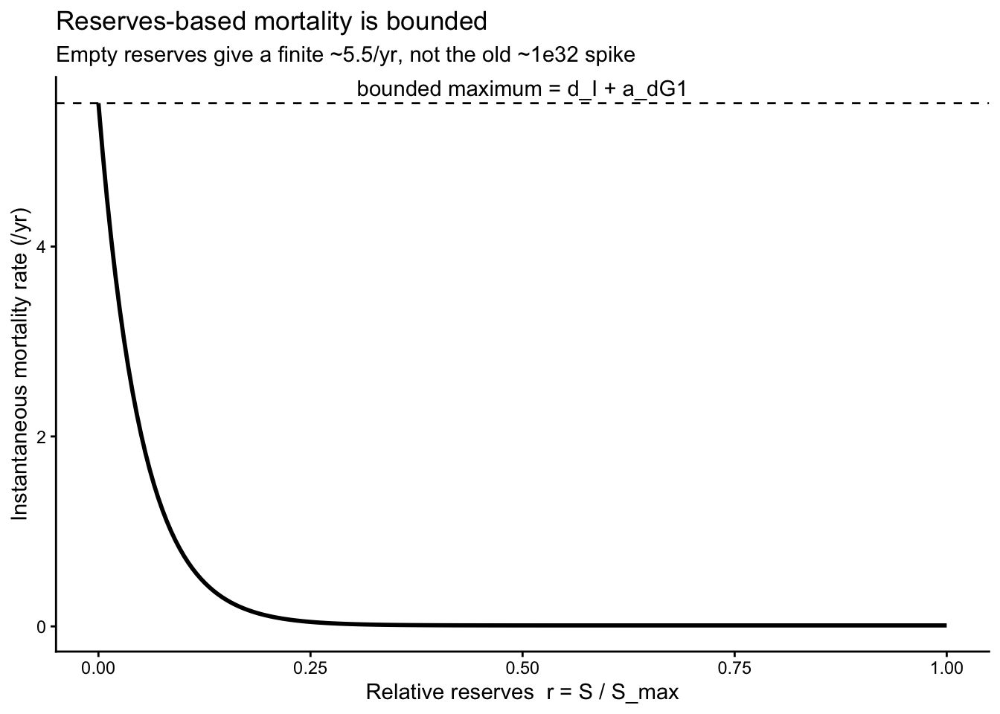
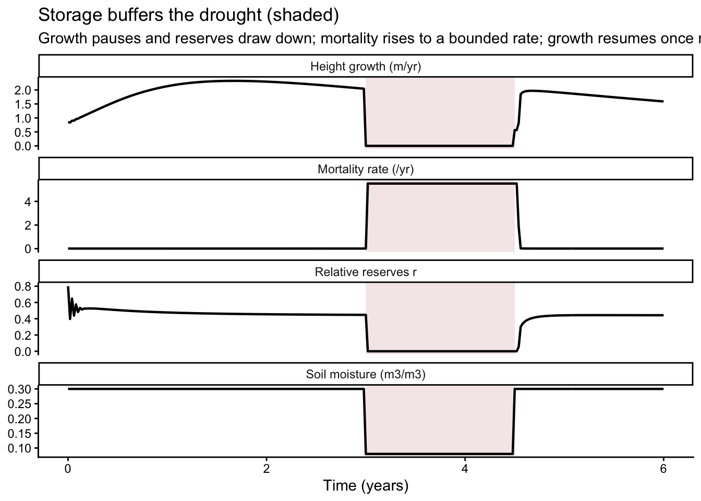
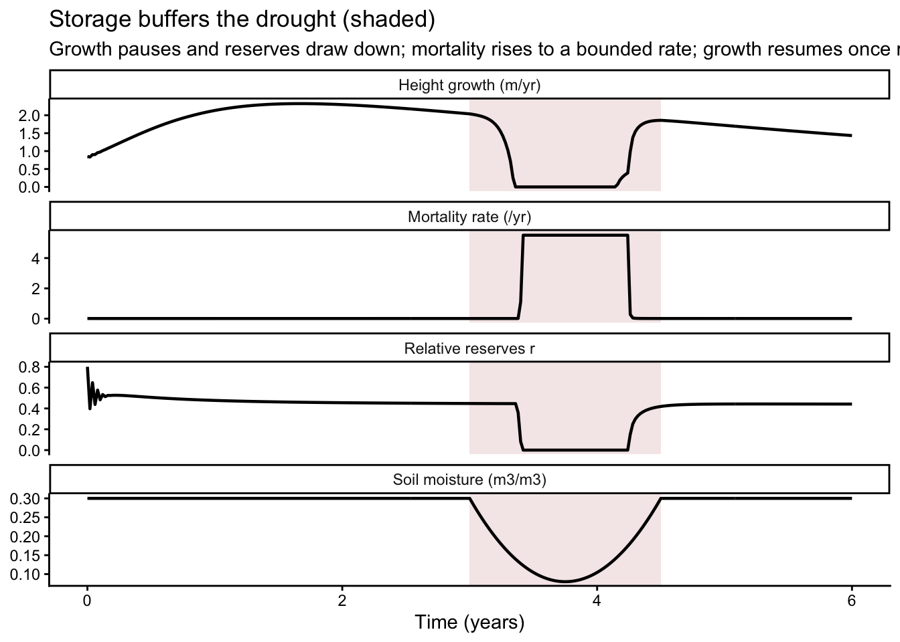

library(plant)
library(dplyr)
library(tidyr)
library(ggplot2)TF24: carbohydrate storage, buffered growth and mortality
guide
Trees can use stored non-structural carbohydrates (NSC) to buffer periods when photosynthesis does not meet demand. Growth can slow while reserves decline, and mortality risk can rise gradually rather than responding immediately to one poor day or season.
TF24 now represents this buffer with an explicit carbon-storage state. Earlier versions linked growth and mortality directly to instantaneous net production. During a severe productivity trough, that formulation could produce mortality rates near \(10^{32}\) and overflow the size-density equations (issue #550).
This guide follows carbon into and out of the storage pool, then uses a simple drought experiment to show its effects. The governing idea is:
a plant should not grow unless it has ample carbon in storage.
The carbon flow
Each plant carries a storage pool \(S\) (kg of NSC) as an extra ODE state. Net mass production \(P\) is assimilation after respiration and turnover costs. Current positive production supplies growth and reproduction, but the fraction used is controlled by how full the reserve pool is. Production not used for growth refills storage:
\[ \frac{\mathrm{d}S}{\mathrm{d}t} = P - U, \qquad U = P^{+}\,G(r), \]
where \(U\) is the carbon actually committed to growth and reproduction (split between them by TF24’s usual allocation fractions), \(P^{+}\) is a smooth positive part of net production, and \(G(r)\) is a reserve gate on the relative fullness of the pool.
Capacity and relative reserves
Storage capacity scales with sapwood mass — NSC is held largely in living sapwood parenchyma:
\[ S_{\max} = a_{\mathrm{st1}}\, m_{s}, \qquad r = \frac{S}{S_{\max}} \in [0, 1], \]
with \(m_s\) the sapwood mass and \(a_{\mathrm{st1}}\) the storable fraction of it (default 0.10). \(r\) is the plant’s relative reserve level, and it is the single signal that both the growth gate and the mortality term read.
The reserve gate on growth
Growth proceeds at the production rate, scaled by a smooth logistic gate that is \(\approx 0\) when reserves are low and \(\approx 1\) when they are ample:
\[ G(r) = \frac{1}{1 + \exp\!\big(-(r - a_{\mathrm{st2}})/w\big)}, \qquad P^{+} = \tfrac{1}{2}\Big(P + \sqrt{P^{2} + \varepsilon^{2}}\Big). \]
\(a_{\mathrm{st2}}\) is the reserve fraction at which growth is half-on (default 0.10), \(w\) a fixed width, and \(P^{+}\) a differentiable stand-in for \(\max(P, 0)\) that removes the old hard net > 0 growth cutoff. Carbon not committed to growth and reproduction stays in \(S\) and refills the pool.
A deliberate modelling choice sits here. Growth is gated at the production rate, not metered out of the pool as a discharge \(a_{\mathrm{st2}}\,S\) (the literal “utilisation” of Stefaniak et al. 2026). With capacity tied to sapwood mass, a seedling’s pool is tiny relative to its high specific productivity — a full pool can fund only a few percent of its production rate — so a discharge-rate limit would choke establishment and collapse reproduction under light competition. Gating the rate instead preserves healthy growth while still enforcing “no growth without reserves”.
Reserves-based mortality
The growth-dependent mortality term now reads relative reserves instead of instantaneous productivity:
\[ d(r) = d_I + a_{\mathrm{dG1}}\,\exp(-a_{\mathrm{dG2}}\, r). \]
Because \(r \in [0,1]\), total mortality is bounded between \(d_I + a_{\mathrm{dG1}} e^{-a_{\mathrm{dG2}}}\) and \(d_I + a_{\mathrm{dG1}}\). Excess mortality is lowest at full reserves and rises smoothly to the finite maximum \(a_{\mathrm{dG1}}\) as the pool empties. The old runaway is therefore impossible by construction, and mortality changes gradually as reserves decline.
A newborn seedling is seeded with reserves at a fraction \(a_{\mathrm{st3}}\) of its capacity (default 0.8), so it can establish rather than dying immediately with an empty pool.
p <- TF24_Strategy()$pars
tibble(r = seq(0, 1, length.out = 200)) |>
mutate(mortality = p$d_I + p$a_dG1 * exp(-p$a_dG2 * r)) |>
ggplot(aes(r, mortality)) +
geom_line(linewidth = 1) +
geom_hline(yintercept = p$d_I + p$a_dG1, linetype = "dashed") +
annotate("text", x = 0.5, y = p$d_I + p$a_dG1, vjust = -0.5,
label = "bounded maximum = d_I + a_dG1") +
labs(x = "Relative reserves r = S / S_max",
y = "Instantaneous mortality rate (/yr)",
title = "Reserves-based mortality is bounded",
subtitle = "Empty reserves give a finite ~5.5/yr, not the old ~1e32 spike") +
theme_classic()
Behaviour: growth pauses in drought and resumes on recovery
The clearest way to see the buffer is to drive one plant through a deliberately simple drought and recovery. The helper below reproduces the C++ storage capacity (\(S_{\max} = a_{\mathrm{st1}}\, m_s\)) so we can report the relative reserve \(r\) alongside height and mortality.
storage_capacity <- function(s, height) {
p <- s$pars
area_leaf <- (height / p$a_l1)^(1 / p$a_l2)
eta_c <- 1 - 2 / (1 + p$eta) + 1 / (1 + 2 * p$eta)
mass_sapwood <- (area_leaf * p$theta) * height * eta_c * p$rho
p$a_st1 * mass_sapwood
}
fixed_env <- function(theta) {
e <- Environment("TF24")
e$set_soil_number_of_depths(5)
e$set_soil_water_state(rep(theta, 5))
e$set_fixed_environment(1.0, 40) # full light to 40 m
e
}For transparency, this diagnostic uses a small manual Euler step rather than the production ODE solver. It follows three years in well-watered soil, a sharp drought from year 3 to 4.5, and then recovery. Use run_scm() for model runs; this loop is only a teaching probe.
s <- TF24_Strategy()
wet <- fixed_env(0.30)
dry <- fixed_env(0.08)
pl <- TF24_Individual(s)
h0 <- pl$state("height")
pl$set_state("storage", s$pars$a_st3 * storage_capacity(s, h0))
dt <- 0.02
tmax <- 6
rows <- vector("list", round(tmax / dt) + 1)
for (i in seq_along(rows)) {
t <- (i - 1) * dt
env <- if (t >= 3 && t < 4.5) dry else wet
pl$compute_rates(env)
h <- pl$state("height")
rows[[i]] <- tibble(
time = t,
height = h,
dheight = pl$rate("height"),
reserves = pmax(pl$state("storage"), 0) / storage_capacity(s, h),
mortality = pl$rate("mortality"),
soil_water_state = env$get_soil_water_state()[1]
)
pl$set_state("height", h + dt * pl$rate("height"))
pl$set_state("storage", pl$state("storage") + dt * pl$rate("storage"))
}
traj <- bind_rows(rows)
traj |>
pivot_longer(c(dheight, reserves, mortality,soil_water_state)) |>
mutate(name = recode(name,
dheight = "Height growth (m/yr)",
reserves = "Relative reserves r",
mortality = "Mortality rate (/yr)",
soil_water_state = "Soil moisture (m3/m3)")) |>
ggplot(aes(time, value)) +
annotate("rect", xmin = 3, xmax = 4.5, ymin = -Inf, ymax = Inf,
alpha = 0.12, fill = "brown") +
geom_line(linewidth = 0.8) +
facet_wrap(~name, ncol = 1, scales = "free_y") +
labs(x = "Time (years)", y = NULL,
title = "Storage buffers the drought (shaded)",
subtitle = "Growth pauses and reserves draw down; mortality rises to a bounded rate; growth resumes once reserves refill") +
theme_classic()
The storage model produces three linked responses during the shaded drought:
- Height growth and reproduction pause. As reserves fall below the gate threshold, their shared growth flux drops smoothly towards zero. The turnover-driven conversion of sapwood to heartwood continues independently.
- Reserves deplete, mortality rises — but stays bounded. The mortality rate climbs toward its finite maximum (\(d_I + a_{\mathrm{dG1}} \approx 5.5\)/yr), so death is gradual over the drought rather than an instantaneous overflow.
- Recovery is buffered, not instantaneous. When water returns, the reserve gate directs much of the carbon towards refilling the pool. Height growth strengthens as reserves recover rather than switching on all at once.
The growth threshold a_st2
a_st2 is the reserve fraction at which the growth gate is half open. Raising it requires fuller reserves before growth proceeds strongly; lowering it allows growth at lower reserve levels. In this particular setup, a well-watered plant settles near \(r \approx 0.45\), so thresholds up to roughly 0.2 mainly affect the drought response. These values are model outcomes, not universal biological thresholds. The default is 0.10.
s <- TF24_Strategy()
s$pars[c("a_st1", "a_st2", "a_st3")]$a_st1
[1] 0.1
$a_st2
[1] 0.1
$a_st3
[1] 0.8| parameter | meaning | default |
|---|---|---|
a_st1 |
storage capacity per unit sapwood mass (kg NSC / kg) | 0.10 |
a_st2 |
reserve fraction at which growth is half-on | 0.10 |
a_st3 |
initial storage at birth, as a fraction of capacity | 0.80 |
Smoother soil moisture variation
The sharp drought makes the sequence easy to see but is not intended as a realistic forcing trajectory. The next diagnostic changes soil moisture smoothly through the same interval. It uses the same manual integration solely to illustrate how reserve buffering responds to a gradual environmental change.
s <- TF24_Strategy()
wet <- fixed_env(0.30)
dry <- fixed_env(0.08)
pl <- TF24_Individual(s)
h0 <- pl$state("height")
pl$set_state("storage", s$pars$a_st3 * storage_capacity(s, h0))
dt <- 0.02
tmax <- 6
rows <- vector("list", round(tmax / dt) + 1)
for (i in seq_along(rows)) {
t <- (i - 1) * dt
env <- if (t >= 3 && t < 4.5) fixed_env(0.3 + 0.22*(16/9)*(t - 3)*(t - 4.5)) else wet
pl$compute_rates(env)
h <- pl$state("height")
rows[[i]] <- tibble(
time = t,
height = h,
dheight = pl$rate("height"),
reserves = pmax(pl$state("storage"), 0) / storage_capacity(s, h),
mortality = pl$rate("mortality"),
soil_water_state = env$get_soil_water_state()[1]
)
pl$set_state("height", h + dt * pl$rate("height"))
pl$set_state("storage", pl$state("storage") + dt * pl$rate("storage"))
}
traj <- bind_rows(rows)
traj |>
pivot_longer(c(dheight, reserves, mortality,soil_water_state)) |>
mutate(name = recode(name,
dheight = "Height growth (m/yr)",
reserves = "Relative reserves r",
mortality = "Mortality rate (/yr)",
soil_water_state = "Soil moisture (m3/m3)")) |>
ggplot(aes(time, value)) +
annotate("rect", xmin = 3, xmax = 4.5, ymin = -Inf, ymax = Inf,
alpha = 0.12, fill = "brown") +
geom_line(linewidth = 0.8) +
facet_wrap(~name, ncol = 1, scales = "free_y") +
labs(x = "Time (years)", y = NULL,
title = "Storage buffers the drought (shaded)",
subtitle = "Growth pauses and reserves draw down; mortality rises to a bounded rate; growth resumes once reserves refill") +
theme_classic()
Status
The storage formulation keeps mortality bounded and produces the qualitative growth-and-mortality buffering shown above. Its parameter values are prototype defaults, not calibrated estimates. In particular, \(a_{\mathrm{st1}}\), \(a_{\mathrm{st2}}\), \(a_{\mathrm{st3}}\), and the reserve-to-mortality relationship still need to be evaluated against suitable observations. TF24f inherits the same storage pool.
An independent soil-water singularity at the residual moisture floor was also fixed while testing this regime (issue #549; PR #554).